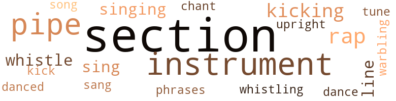
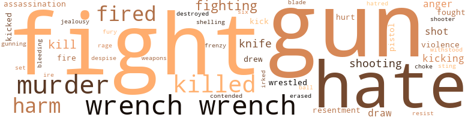
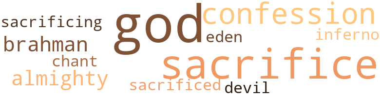

Tin Box (The): A Story of Texas Cattle and Oil, by Williams, Jerome Ardell (1958)
74 music-related terms matched in this text.
Most frequent terms in this topic: section (29); pipe (9); instrument (6); instruments (4); rap (4)
chant.n.01
Definition: a repetitive song in which as many syllables as necessary are assigned to a single tone
| word | sentence |
|---|---|
| chant | Above these bids could be heard the steady drone of the auctioneer 's chant : " One and three , one and three . |
dance.n.01
Definition: an artistic form of nonverbal communication
| word | sentence |
|---|---|
| dance | The stock pens on the Meredith ranch were an expansive , rambling array of pens of various sizes , and were built on the slope of a beautiful wooded hill , where there was an abun - dance of shade . |
dance.v.03
Definition: skip, leap, or move up and down or sideways
| word | sentence |
|---|---|
| danced | Then all joined hands and danced in a circle , the jingle of their spurs keeping rhythmic time to the " clomp , clomp " of their heavy boots on the hard ground . |
kick.v.04
Definition: kick a leg up
| word | sentence |
|---|---|
| kicking | Some sat on their haunches , while others showed their resentment by such gestures as kicking the fence , or picking up stones and casting them at trees and other objects near the corrals . |
| kick | Not only would he buck violently when mounted , but would kick and make desperate efforts to bite the feet of his rider while doing so . |
| kicking | He was reserved for rodeo use only , until he acquired the pernicious habit of pawing and kicking his riders after bucking them off . |
| kicking | Instantly the bronc went high into the air , squealing , kicking and biting . |
musical_instrument.n.01
Definition: any of various devices or contrivances that can be used to produce musical tones or sounds
| word | sentence |
|---|---|
| instruments | " With the precision instruments that have been perfected , " she explained , " they can almost be assured if there is oil beneath the surface . |
| instruments | By this time all machinery had been put in place and con - nected up , and all was in readiness to make the test for the black gold that the precision instruments had indicated lay beneath the surface of the vast ranch . |
| instrument | " I 'm afraid you 've made a mistake , signing such an instrument , June , " Wade said , after listening very attentively to June 's story as they drove home . |
| instrument | Uncle Cyrus ( as he had instructed June to call him ) put on his glasses and started to read the instrument . |
| instrument | " This is the most damnable - if you will excuse the expres - sion - instrument I 've ever seen crammed down the throat of an unsuspecting person , " he said angrily as he laid the paper down and removed and polished his glasses with his handker - chief . |
| instrument | Sup - pose she should ask the courts to declare the instrument in - valid on the grounds that Bill had suggested . |
| instrument | " Well , I tell you , Chandler , it 's just as I told you when I drew up that instrument . |
| instrument | But , on the other hand , all laws are based on reason , and very often the courts disregard the legal terms and phrases of an instrument , and render their judgment on reason and common sense . |
| instruments | " Did you tell them about those men who have been testing out those oil instruments on some of the ranches around here ? " |
| instruments | The company 's laboratory had started elaborate tests of sample cores of earth brought in by the field operators , had made a thorough study of charts obtained from instruments used in the tests , and sent a report of their findings to the executive office of the company , when one of the executives called on Robert Chandler , in his office on the second floor of the Chan - dler building , a three-story office building on the main street of the little mountain town of Labesia . |
phrase.n.02
Definition: a short musical passage
| word | sentence |
|---|---|
| phrases | But , on the other hand , all laws are based on reason , and very often the courts disregard the legal terms and phrases of an instrument , and render their judgment on reason and common sense . |
pipe.n.04
Definition: a tubular wind instrument
| word | sentence |
|---|---|
| pipe | The dinkey ( steam en - gine ) then began its laborious task of drawing out the string of pipe . |
| pipe | So great was the pressure that it sent a stream of oil out through the pipe hole in the rotary , and out the top of the derrick . |
| pipe | " See how carefully they cut the pipe off , re-threaded and capped it , then spread the dirt all round and over it to look as though it had been abandoned ? " |
| pipe | Bill said as he scraped the dirt from the top of the pipe . |
| pipe | Upon close examination , the cap on the end of the pipe was found to have been set with a hardening paste . |
| pipe | Slipping this piece of pipe ( which was about two feet long ) over the end of the wrench to give greater leverage , both the men began to pull together . |
| pipe | " Let me see if I can detect anything unusual about it , " June said as she stepped up and leaned over the end of the three-inch pipe the well drillers had left in the ground . |
| pipe | " I would have to have a gasoline engine and some pipe , would n't I ? " she asked . |
| pipe | And we have plenty of pipe . |
rap.n.05
Definition: genre of African-American music of the 1980s and 1990s in which rhyming lyrics are chanted to a musical accompaniment; several forms of rap have emerged
| word | sentence |
|---|---|
| rap | The stockman , always wary and alert when handling cattle , sprang to the fence , where he held on with one hand while he gave the animal a sharp rap across the nose with a staff he carried in the other . |
| rap | Cowboy yells , and the sharp rap of quirts on leather chaps gave evidence that some of the riders were beating the bushes a short distance away . |
| rap | " Maybe by taking this rap , you 'll learn to take better aim , " Chandler sneered . |
| rap | So I believe he really means to let you boys take the rap , " Bromberg added . |
section.n.01
Definition: a self-contained part of a larger composition (written or musical)
| word | sentence |
|---|---|
| section | But what I mean by peculiar is there being only the two cars on that section of the road and that they should meet at that particular spot , the most treacherous spot on the entire road . " |
| section | It was a beautiful fall morning in the mountainous section of West Texas . |
| section | The magic word was on every tongue , and was the chief topic of interest wherever two or more persons of that section met . |
| section | " I think so , because I know that pasturage in this section is never less than twenty-live cents per month . " |
| section | The Patton tract , as it was familiarly known in that section , was a semiwooded , semiprairie tract of twenty-five thousand acres , through which the beautiful Sawaya River flowed . |
| section | " That 's right , I believe it was , " Bill remembered , as he opened the letter and started to read : " Dear Mr. Shearn : Since my return home I have thought of you many times , and of your heroic act in rescuing me from that runaway horse during my recent visit to your section . |
| section | " Usually sufficient water for cattle can be found in that section anywhere from forty to eighty feet . |
| section | So he practiced diligently , as he not only wanted to make a good showing for his section of the state , but , more important to him , he wanted to give a good performance as an invited guest of June Meredith . |
| section | The annual Fat Stock Show and Rodeo held at Labesia each fall was a three-day affair , and was an event to which the cream of the outfits of that entire section of the state looked forward with eager anticipation . |
| section | That section of West Texas being given over chiefly to cat - tle-raising , there were some very large cattle ranches , and some very fine outfits ; each was very jealous of the reputation of its ranch , and wanted it to be known as the best . |
| section | Cattle and other livestock were being moved from every section of the yards to the scales , after salesmen and buyers had agreed on prices . |
| section | " Wade is one of the top rope hands of this section , " June said , smiling at Wade . |
| section | Because of the scant rainfall during that period , much of the rich valley land that had formerly grown grass and other vegetation with such abundance had become arid wasteland and was being blown away by the dust storms which plagued that section . |
| section | Having been child - hood sweethearts and almost constant companions since they were children , they accepted each other as their proper es - corts , and as it was a generally accepted conclusion in that section that such companionship should lead to matrimony , Wade could not picture anyone as a rival for June 's affections . |
| section | Being confident that he had few if any peers as an all-round cowboy in that section of West Texas ( and it must be ad - mitted that the West Texas cowboy is as good as they come ) , he felt that if he could beat Bill in any event that the cowboy from the coast country might choose , and by the open chal - lenge in June 's presence , he knew if Bill had any sporting blood in his veins , he could be lured into a personal contest . |
| section | Remembering that one of his ranch employees had told him of seeing Bill stop in Labesia while on his way to the Meredith ranch and the rodeo and talk with Jake Simmons for some time ( Jake Simmons was a truck operator who had a reputation in that section , of not being too particular about whose cattle he hauled , or where he hauled them , so long as he got paid ) , he figured there might be a chance of associating this incident with the scheme he had in mind . |
| section | " We 'll take the crew tomor - row , and throw all the cattle in that section together . |
| section | " Well , I believe the best way would be to work a section at a time . |
| section | It was only a few days after this that Bill Shearn , after his usual rounds of a section of the Johnson ranch , was returning home . |
| section | These cattle look gaunt and thin because of the severe drouth of the past few years - so do all the rest of the cattle in this section . |
| section | She had friends among the ranchers in that section , yes , and friends in Labesia . |
| section | It was an unusually still morning for late fall in that section of West Texas . |
| section | But now , since it had been proved definitely that he had fraudulently dispossessed June Meredith , daughter of one of the wealthiest and most highly respected pioneer families of that section , of her land and cattle and , to add to that , the fact that he stood accused of plotting the death of her parents , the community , and that entire section of West Texas for miles around , was up in arms . |
| section | But now , since it had been proved definitely that he had fraudulently dispossessed June Meredith , daughter of one of the wealthiest and most highly respected pioneer families of that section , of her land and cattle and , to add to that , the fact that he stood accused of plotting the death of her parents , the community , and that entire section of West Texas for miles around , was up in arms . |
| section | I 'm doing very well as it is , and with Tom in here with me , he knows so many of the ranchers in this section , I 'm sure we would do a mighty big business , " Randall suggested earnestly . |
| section | Well , I learned that Bill owned a section of land , adjoining mine , and had just about finished what he calls his ' Bachelor 's Quarters . ' |
| section | He had figured that to raise twenty thousand dollars would be next to impossible for any rancher in that section at that time . |
| section | They were approaching a particularly dangerous section of the road . |
| section | Being told that the couple were well-known residents of that section , and that if they had any papers with them , they were very likely to be in the car and , of course , ruined , he began to inspect very diligently the course of the plunge , pointing out to those who came near him just where the car left the road and went over the precipice . |
sing.v.02
Definition: produce tones with the voice
| word | sentence |
|---|---|
| singing | Birds were singing everywhere , seemingly glad to welcome the spring after the long winter months . |
| sang | The rope sang as the strain of the weight of the horse came against it and stopped . |
| sing | It 's time for the world to be happy and sing . |
| sing | The hum of the plane 's motor seemed to sing a song of relief , of hope and courage to June 's troubled mind . |
singing.n.01
Definition: the act of singing vocal music
| word | sentence |
|---|---|
| singing | " With the trees budding , flowers blooming , birds singing , everything imbued with new life . |
song.n.01
Definition: a short musical composition with words
| word | sentence |
|---|---|
| song | The hum of the plane 's motor seemed to sing a song of relief , of hope and courage to June 's troubled mind . |
tune.n.01
Definition: a succession of notes forming a distinctive sequence
| word | sentence |
|---|---|
| tune | And besides , " Robertson continued , " you will be getting twenty-five thousand acres of good , rich gulf coast land that in itself may be worth a for - tune . " |
| line | And it seems to me that , for some reason best known to yourself , you have ignored and completely obliter - ated this line in exercising your legal right to take those cattle from this girl . " |
| line | A glance at the pens will reveal to you the many years of constant effort and success of the Meredith generations in building a line of purebred cattle , that for years have been known throughout the state , and wherever cattle are raised , as one of the finest herds of purebred cattle to be found anywhere in this country . |
upright.n.02
Definition: a piano with a vertical sounding board
| word | sentence |
|---|---|
| upright | " You will , gentlemen of the jury , " the attorney pleaded , " in all honesty to the heretofore unblemished reputation of this upright and honorable citizen , and in honesty to your - selves as jurors , find the defendant Robert Chandler not guilty . " |
whistle.v.01
Definition: make whistling sounds
| word | sentence |
|---|---|
| whistle | A six o'clock whistle in the oil field awoke her with a start the next morning . |
| whistle | Bill then placed his fingers to his lips and blew a long , shrill whistle . |
| Whistling | Whistling to attract their attention , he beckoned to them . |
yodel.v.01
Definition: sing by changing register; sing by yodeling
| word | sentence |
|---|---|
| warbling | The bird was warbling as if to burst its throat . |
176 violence-related terms matched in this text.
Most frequent terms in this topic: fight (18); hate (17); gun (17); wrench (15); murder (10)
anger.n.01
Definition: a strong emotion; a feeling that is oriented toward some real or supposed grievance
| word | sentence |
|---|---|
| anger | " Jim , I 've told you I do n't need that land , and do n't want it , " Chandler asserted with rising anger . |
| anger | As he continued to read , the expression on his face began to change , first from one of curiosity to one of concern , then to one of disgust and , finally , to anger . |
| ire | June , seeing this and wish - ing to avoid any incident that might arouse Chandler 's ire , lest he put her off the place with nowhere to go with her part of the cattle , said , " I 'll bring him back , Mr. Chandler . " |
| anger | I want those papers , and I want them now , " he demanded with rising anger . |
blast.v.03
Definition: use explosives on
| word | sentence |
|---|---|
| shelling | Aunt Harriet asked in a gruff voice as June came up to where she was sitting on the back porch shelling corn for the chickens . |
bleeding.n.01
Definition: the flow of blood from a ruptured blood vessel
| word | sentence |
|---|---|
| bleeding | Your hand , it 's bleeding , " she said anx - iously . |
character_assassination.n.01
Definition: an attack intended to ruin someone's reputation
| word | sentence |
|---|---|
| assassination | Stonelli explained in detail what had happened in the at - tempted assassination of Bill Shearn . |
| assassination | All the pent-up fury , hate and revenge for the way this man had treated June , as well as the presumption that he was responsible for the attempted assassination , surged through every fiber of his being . |
contemn.v.01
Definition: look down on with disdain
| word | sentence |
|---|---|
| despise | But today I realize the fallacy of that dream and find myself wholly dependent and at the mercy of a man I despise , and who I know will sooner or later evict me from my home . " |
contend.v.06
Definition: be engaged in a fight; carry on a fight
| word | sentence |
|---|---|
| contended | Aunt Harriet contended , however , that it was a bad sign . |
craze.n.02
Definition: state of violent mental agitation
| word | sentence |
|---|---|
| frenzy | The roughnecks worked in a frenzy to get the machinery placed as soon as it arrived on lo - cation . |
defy.v.01
Definition: resist or confront with resistance
| word | sentence |
|---|---|
| withstood | Many of them had obtained loans on their land or livestock , and as their notes came due , in an effort to econo - mize in the upkeep of their ranches during the winter , were rushing their cattle - those that had withstood the drouth in fair shape - to market . |
destroy.v.04
Definition: put (an animal) to death
| word | sentence |
|---|---|
| destroyed | " But now , since you have so ruthlessly destroyed any pos - sibility of her ever enjoying such security by your actions in taking all her best cattle , thus depriving her of any appreci - able source of income , I 've lost all interest in the Meredith cattle . " |
draw.v.23
Definition: pull (a person) apart with four horses tied to his extremities, so as to execute him
| word | sentence |
|---|---|
| draw | " He said his lawyer would draw up the papers . |
| draw | The yearly payment of ten thousand dollars was to be made semiannually , and was to draw interest at a rate of six per cent . |
| draw | It did give June a right of entrance to the river for her cattle or to draw water from the river and deposit it on her land in any way she might choose . |
| drew | " Well , I tell you , Chandler , it 's just as I told you when I drew up that instrument . |
| drew | Robertson drew up a chair to the end of the desk . |
erase.v.01
Definition: remove from memory or existence
| word | sentence |
|---|---|
| erased | It 's just a small mountain stream , " she remarked , as the name brought back memories that could never be erased . |
fight.n.02
Definition: the act of fighting; any contest or struggle
| word | sentence |
|---|---|
| fighting | " I sometimes believe , " Chandler continued , " that if man would forget his ill-gotten gains and seek the love and guidance of God , God would reveal to him the many good things in store for him , and that all this fighting , lying and stealing from each other the things that belong to God would cease in the human race , " he said thoughtfully . |
fight.n.05
Definition: a boxing or wrestling match
| word | sentence |
|---|---|
| fight | Or if we were lucky , we might be able to feign a fight just as a fruit peddler came along , upsetting his cart and making away with enough of the fruit partly to appease the pangs of hunger . |
| fight | I may lose it , but not without a fight , " she said . |
| fight | With Chandler apparently determined to take everything she had depended on to pay her debts , it seemed that the fight to retain any of her father 's wealth , anything of what the Meredith pioneers had worked so long and hard for , was slipping out of her control , out of the Mere - dith name - and she was powerless to do anything about it . |
| fight | I also wanted to encourage her , lone girl that she is , in making such a valiant fight to salvage what she could of her fathers wrecked estate . |
| fight | Uncle Jim had related that during the gun fight with the bandits who tried to liberate the cattle the night before they were to be marketed , one of the men fell and was dragged into the truck by a confederate . |
| fight | Chandler tried to make a fight of it as the two men rolled on the ground , but was no match for the younger , more rugged man of the range , who gave him an unmerciful beating . |
| fight | " I do n't believe I 'd have that cowpuncher arrested if I were you , Chandler , " the lawyer advised , " because , after all , it was just a fist fight that you got the worst of . |
| fight | And too , it might bring up complications that might not be to your advantage , so I 'd just forget about the fight . " |
| fight | " Got in a fight with Bill Shearn , and got beat up pretty bad . |
| fight | " I got in a little fight . |
| fight | But now , since the fight with Bill , she felt that he would consider this incident a justifiable excuse to order the sheriff to act . |
| fight | The hope of finding water available , the fight between Bill and Chandler , the cowardly attempt by Wade Lucas to kill Bill without warning . |
| fight | " Aunt Harriet , " June said hesitatingly , when they were alone that night , " during the fight between Bill and Wade at Avera , this morning , I heard Bill say to Wade : ' There are some things concerning some cattle I want cleared up . ' |
fight.v.02
Definition: fight against or resist strongly
| word | sentence |
|---|---|
| fight | " Do n't you try to fight against it ? " |
| fighting | Leaving his beloved Tennessee hills , he drifted to Texas , where he volunteered to join the army of stout-hearted pioneers , who were fighting desperately to wrest their free - dom from the Mexican government . |
| fight | However , we 've got to fight for the honor and reputation of the circle-bar , and for Miss June , " he said . |
| fought | I do n't wish to appear remorseful - " her eyes were filling with tears as she fought to control her emotions - " but as most of you know , this may be the last time this outfit will compete in the Meredith name . |
| fighting | We were fighting for you ! " and so on . |
| fight | If I were on a jury , and such a case should come before me , I would fight tooth and nail to have such a contract invalidated . |
| fight | She had no money with which to fight Chandler , and suppose the court should decide against her , and declare the contract valid . |
| fighting | " That 's awfully sweet of you , " June said , fighting hard to control her emotions . |
| fighting | Wade , partly concealed from the fighting men by the car , was waiting for an opportunity for revenge . |
| fighting | Then the men , holding their lariats tightly , got close enough to the snorting , fighting bronc to grasp him by the ears . |
| fought | And as June and Charlie stepped into the saloon , chairs were being smashed , bottles hurled and tables overturned as the men fought desperately . |
| fight | Frantically , he tried to fight free of his wife , pleading with her to release him that he might yet stop the car , but she only clung tighter . |
fury.n.01
Definition: a feeling of intense anger
| word | sentence |
|---|---|
| rage | Chandler flew into a rage . |
| fury | All the pent-up fury , hate and revenge for the way this man had treated June , as well as the presumption that he was responsible for the attempted assassination , surged through every fiber of his being . |
gag.v.06
Definition: cause to retch or choke
| word | sentence |
|---|---|
| choke | " Put more pressure on them pumps , " the driller yelled to the fireman , " We 've got to try to choke it off . " |
gall.v.02
Definition: irritate or vex
| word | sentence |
|---|---|
| irked | ( Jim Robertson assumed a firm , busi - ness-like attitude , and it was obvious that he was irked at Chandler 's endeavor to forestall any attempt to bring him to terms . ) |
gun.n.01
Definition: a weapon that discharges a missile at high velocity (especially from a metal tube or barrel)
| word | sentence |
|---|---|
| gun | In the gun battle , one of the men fell as he stepped off the wire and started for the truck . |
| guns | Seeing Bill fall from the horse and believing him to be wounded , two men emerged from a clump of bushes near the road , and with drawn guns walked hurriedly to the spot where the rider had fallen . |
| gun | He searched the driver and the car thoroughly , then got out , closed the door and stood close beside it , keeping his gun on the driver . |
| guns | Peeping through the panel of the rear door as the men ap - proached , Bill saw them put their guns in their coat pockets . |
| gun | As the men raised their hands , Bill ordered : " Now you there , closest to the car , keep your right hand up , and with your left hand reach into your coat pocket where I saw you put that gun . |
| gun | As this bandit fumbled for his gun , the first man made a quick grab for the gun he had dropped to the ground . |
| gun | As this bandit fumbled for his gun , the first man made a quick grab for the gun he had dropped to the ground . |
| gun | The other man then nervously dropped his gun to the ground . |
| guns | Bill then backed the two men away , picked up their guns and put them in his pockets . |
| gun | " All right , you two , " he nodded to two of the gun - men , " Back up together . |
| gun | Uncle Jim had related that during the gun fight with the bandits who tried to liberate the cattle the night before they were to be marketed , one of the men fell and was dragged into the truck by a confederate . |
| gun | As they came to the spot where Bill 's hat had been shot from his head , he ordered one of the gun - men to pick up the hat , and back up to him . |
| gun | Catching the two men apart for a brief moment , he stepped from behind the automobile , and with drawn gun drew a bead on Bill . |
| gun | Before Wade could fire a second time , however , Juan had drawn his .45 and , firing from the hip , had shot Wade 's gun from his hand . |
| gun | Bill handed his gun to Juan , and faced Wade , who started to back away . |
| gun | As Wade started to draw , Bill quickly turned his side to Wade , causing him to miss , and at the same time drew his own revolver and inflicted a flesh wound in Wade 's gun hand , causing him to drop his gun . |
| gun | As Wade started to draw , Bill quickly turned his side to Wade , causing him to miss , and at the same time drew his own revolver and inflicted a flesh wound in Wade 's gun hand , causing him to drop his gun . |
| gun | Backing Wade away from the gun , Bill picked it up and handed it , with his own , to Zack . |
| gun | He came in here a few minutes ago and forced me , at the point of a gun , to write him a receipt for twenty thousand dollars . |
| gun | " When prohibition was instituted , he formed his gang into a mob , and declared himself king of the illicit liquor and narcotics trade of the East Side , engaging in many gun battles with rival mobs that tried to muscle in on his territory . |
gun.v.01
Definition: shoot with a gun
| word | sentence |
|---|---|
| gunning | " I understand that Wade Lucas is gunning for him , " they heard one cowman remark . |
harm.v.01
Definition: cause or do harm to
| word | sentence |
|---|---|
| harm | I ca n't see why anyone would want to harm him . |
| harm | They would n't try to harm anybody , " Chandler argued . |
hate.n.01
Definition: the emotion of intense dislike; a feeling of dislike so strong that it demands action
| word | sentence |
|---|---|
| hatred | " These early lessons , '' he went on , " learned from hard knocks , imbued within me and in many other unfortunates like me a deep hatred for society and all the things for which it stands . |
| hate | " I sure hate to lose the job at this time , " June said . |
| hate | All the pent-up fury , hate and revenge for the way this man had treated June , as well as the presumption that he was responsible for the attempted assassination , surged through every fiber of his being . |
| hate | I would like to see this heat relieved , but I kind of hate to see the northers because of the dust . |
hate.v.01
Definition: dislike intensely; feel antipathy or aversion towards
| word | sentence |
|---|---|
| hate | " I hate to see him lose the old place . |
| hate | But after all , June is a fine young girl , so I 'd hate to just clamp right down on her and take everything she 's got without pretending to give her a chance . |
| hate | " No , I 'd hate to ask him , " she complained . |
| hate | " Yes , I hate it on account of Miss June / ' Uncle Jack sighed . |
| hate | They were reminiscing over old times when June spoke : " Aunt Martha , I hate to take your company away , but Aunt Harriet has dinner ready . " |
| hate | " Gee , but I 'd hate to meet up with that customer , " she thought . |
| hate | " Yes , I hope we find them , because I 'd hate to believe we 've got rustlers around here again , " Harris said as he rode off . |
| hate | " I hope you find them , " Wade said thoughtfully , " because I 'd hate to start missing cattle so soon after the visit of some of our friends from other parts of the state . " |
| hate | I hate him , " she cried . |
| hate | " I 'd hate to think June is mixed up in it . |
| hate | " I 'd hate to think so , Miss June . |
| hate | " I hate to be so much bother to you and Uncle Cyrus , " June complained . |
| hate | You see , I go down there so much , I hate to impose on Uncle Gyrus and Aunt Susan by staying at their house all the time . |
| hate | But since June so coldly turned down Wade 's proposal of marriage , I 'd hate like blazes to approach him for a loan . " |
hurt.v.04
Definition: cause damage or affect negatively
| word | sentence |
|---|---|
| hurt | " He may be hurt . " |
injury.n.01
Definition: any physical damage to the body caused by violence or accident or fracture etc.
| word | sentence |
|---|---|
| harm | " Oh , well , " Robertson said , with a shrug of his shoulders , " I thought there would be no harm in dropping in for a little friendly chat . " |
| harm | " No , no , no harm done , but I 'm pretty busy this morning . " |
| harm | Aunt Harriet thought long before continuing , " Of course I know we are up against it here , and I know your parents would never have thought of allowing you to accept such a job , much less to seek it , but as you say , we are badly in need of funds , so I can see no harm in such a move . " |
| harm | " Well , I guess it can do no harm , " June agreed . |
jealousy.n.01
Definition: a feeling of jealous envy (especially of a rival)
| word | sentence |
|---|---|
| Jealousy | Jealousy and the loss of prestige . |
kick.v.04
Definition: kick a leg up
| word | sentence |
|---|---|
| kicking | Some sat on their haunches , while others showed their resentment by such gestures as kicking the fence , or picking up stones and casting them at trees and other objects near the corrals . |
| kick | Not only would he buck violently when mounted , but would kick and make desperate efforts to bite the feet of his rider while doing so . |
| kicking | He was reserved for rodeo use only , until he acquired the pernicious habit of pawing and kicking his riders after bucking them off . |
| kicking | Instantly the bronc went high into the air , squealing , kicking and biting . |
kick_back.v.02
Definition: spring back, as from a forceful thrust
| word | sentence |
|---|---|
| kicked | He got out , kicked and stretched his legs , and went back to speak to the horses . |
| kick | And as long as I do n't kick , I ca n't see any reason why you should , " Chandler replied curtly . |
| kicked | And you , June , I 'm catching the next plane home , and I 'll have you kicked off my ranch within the next twenty-four hours . " |
kill.v.10
Definition: cause the death of, without intention
| word | sentence |
|---|---|
| killed | " You know , " he continued , " ever since Tom Meredith was killed , these oil companies have been worrying me to death , wanting to know when I expect to take possession of that ranch , and wanting the first chance at leasing it , " he said after he had read the letter . |
| killed | " You see , Mr. Shearn , after my parents were killed , and there was nothing left to show that father had paid the debt on our home , Mr. Chandler took advantage of me and foreclosed , despite my pleadings for a little more time so I could arrange to avert the foreclo - sure . |
| killed | As you know , I had so little money after Mother and Father were killed , that I needed every penny I could save to try and carry me through . |
| kill | This is a serious situation , Bromberg , he might come back up here and try to kill me for having him jailed . |
| kill | I 'm sure Mr. Shearn was mistaken in thinking these boys were trying to kill him . |
| killed | " It would have been better if that cowpuncher had killed all three of you . |
| killed | " If he 'd killed us , you 'd have been in the clear . |
| kill | " I wo n't kill you like you tried to kill me , you coward , " Bill smiled sarcastically , as he started to close in on Wade . |
| kill | " I wo n't kill you like you tried to kill me , you coward , " Bill smiled sarcastically , as he started to close in on Wade . |
| killed | " Why , that was the amount my father deposited in that bank the day he was killed . " |
| kill | The hope of finding water available , the fight between Bill and Chandler , the cowardly attempt by Wade Lucas to kill Bill without warning . |
| killed | After Mr. Meredith was killed , and the receipt was not found , I knew there was no other proof of the payment . |
| killed | " She found out that Chandler beat her out of it ; found proof that her father paid off the mortgage Chandler held on his ranch the day he was killed . " |
knife.n.02
Definition: a weapon with a handle and blade with a sharp point
| word | sentence |
|---|---|
| knife | Chandler and Uncle Jack did the counting , Chandler using a small counting gadget , and Uncle Jack keeping the count in his mind , cutting a notch on the fence with his pocket knife lor each hundred head counted . |
| knife | Using his pocket knife , Bill released the clamps , which were stuck with rust , and lifted out one of the books . |
| knife | " I 'll have to cut it loose ; it 's rusted to the box , " he said as he started to run the blade of his pocket knife very carefully between the envelope and the box to avoid tearing it . |
| knife | Running the knife blade very carefully along the edge of the envelope , he opened it and pulled out a small piece of paper - a receipt from an old receipt book . |
murder.n.01
Definition: unlawful premeditated killing of a human being by a human being
| word | sentence |
|---|---|
| murder | In a short while , the sheriff and a deputy arrived at the ranch and , handcuffing the three , carried them to Avera where they were placed in jail , charged with attempted murder . |
| murder | " Say , Chandler , " he called somewhat excitedly , " these bums are in jail on a serious charge - attempted murder . |
| murder | " Oh , nothing much , " the officer replied sarcastically , " Just attempted murder , that 's all . " |
| murder | " Attempted murder ? " |
| murder | Staring the witness straight in the eye for a moment , he asked , " Stonelli , were n't you brought here from Avera , where you are being held on a charge of attempted murder ? " |
| murder | " This man , " the attorney said , " was aware of the fact that the Meredith ranch lands were rich in oil , and he was determined to have it by fair means or foul , even to planning the deliberate murder of Tom and Ann Meredith , so that he would have only the inexperi - enced daughter to deal with . |
| murder | During the tenure of this loan , oil scouts of a major oil company began exploring around Labesia , and through a clever ruse ( with the knowledge of Chandler , as he had be - come known ) succeeded in exploring the Meredith ranch , which they found to contain rich oil lands , and which later became one of the country 's most prolific oil fields - " The article went on to relate in detail all the events lead - ing up to the foreclosure of the Meredith land and cattle , the attempted murder of Bill Shearn , the finding of the receipt , and the turning of state 's evidence by Stonelli . |
| murder | The article continued : " The leader of the trio , Stonelli ( who , with his two pals , is now serving a long sentence for attempted murder ) , sent for the district attorney and turned state 's evidence . |
| murder | But upon additional information furnished by Stonelli he was rearrested before leaving the courtroom and extradited to his former home town to stand trial for the murder several years before of a rival gang leader . |
| murder | Chandler reached for the check with hallucinations of a murder shooting through his evil mind . |
musket_ball.n.01
Definition: a solid projectile that is shot by a musket
| word | sentence |
|---|---|
| ball | He would have to play ball with Jim Robertson and he must in some way investigate the new angle . |
open_fire.v.01
Definition: start firing a weapon
| word | sentence |
|---|---|
| fired | I 've seen a right smart , and I 've met all kinds of people , but I ai n't never seen nobody that was so all fired anxious to help some - body they just met . " |
| fired | Mr. Chandler fired me . " |
| Fired | " Fired you ? |
| fired | He fired when the men failed to stop . |
| fire | Both Uncle Jim and Adams opened fire on the two men , who fired back as they ran . |
| fired | June screamed , just as Wade fired . |
| fire | Before Wade could fire a second time , however , Juan had drawn his .45 and , firing from the hip , had shot Wade 's gun from his hand . |
| fired | Waiting until Bill was only a few feet away , he pulled his six-shooter and fired point - blank at Bill , who was watching him closely . |
pain.v.02
Definition: cause emotional anguish or make miserable
| word | sentence |
|---|---|
| hurt | " Do n't think we can hurt him none , eh ? " the gangster mut - tered , as he turned and sat down on his bunk . |
pistol.n.01
Definition: a firearm that is held and fired with one hand
| word | sentence |
|---|---|
| pistol | The sharp , staccato pistol shots , reverberating through the stillness of the early morning hour , brought the sounds of fly - ing hoofbeats coming from the ranch , as Uncle Jack and the first watch had not unsaddled their horses or undressed . |
| pistol | Bill then opened the car door and took an automatic pistol from the man 's pocket . |
resentment.n.01
Definition: a feeling of deep and bitter anger and ill-will
| word | sentence |
|---|---|
| resentment | As usual , he was met by Aunt Harriet who , try as she might , could not conceal her feeling of resentment towards him for the " dirty tactics " she thought he had used in obtaining pos - session of the ranch . |
| resentment | Some sat on their haunches , while others showed their resentment by such gestures as kicking the fence , or picking up stones and casting them at trees and other objects near the corrals . |
resist.v.04
Definition: withstand the force of something
| word | sentence |
|---|---|
| resist | The cowboy kept his horse going for a few feet after the rope began to tighten , not taking the chance of letting the powerful Gotch " set up " to resist the sudden pull that would come against the saddle , were he to stop suddenly . |
revolver.n.01
Definition: a pistol with a revolving cylinder (usually having six chambers for bullets)
| word | sentence |
|---|---|
| six-shooter | Waiting until Bill was only a few feet away , he pulled his six-shooter and fired point - blank at Bill , who was watching him closely . |
shoot.v.02
Definition: kill by firing a missile
| word | sentence |
|---|---|
| shot | Sinking momentarily , it shot back to the surface and quickly floated away on the swiftly flowing waters of the partly dry mountain stream . |
| shot | Uncle Jim thought he had been shot in the leg , as he rose and fell a second time before being helped by his companions . |
| shot | As they came to the spot where Bill 's hat had been shot from his head , he ordered one of the gun - men to pick up the hat , and back up to him . |
shooting.n.02
Definition: killing someone by gunfire
| word | sentence |
|---|---|
| shooting | Hearing the shooting , the other two men who were watch - ing the road a few hundred yards away jumped on their horses and came at a run , just as Uncle Jim and Adams were mount - ing . |
| shooting | " I wonder if those friends of Chandler 's he spoke of are the same three who are in jail for shooting at Bill the other day , " Uncle Cyrus remarked as they climbed into their car . |
| Shooting | " Shooting at Bill ! |
| shooting | Chandler reached for the check with hallucinations of a murder shooting through his evil mind . |
sic.v.01
Definition: urge to attack someone
| word | sentence |
|---|---|
| set | The five flatcars loaded with the derrick , boilers , drilling machinery , drill stem and casing , were set on the nearest sid - ing , twelve miles from the Meredith ranch . |
sting.n.03
Definition: a painful wound caused by the thrust of an insect's stinger into skin
| word | sentence |
|---|---|
| sting | Smarting under the sting of the defeat and humiliation he had received at the hands of Bill Shearn , Wade Lucas was furious . |
sword.n.01
Definition: a cutting or thrusting weapon that has a long metal blade and a hilt with a hand guard
| word | sentence |
|---|---|
| blade | Running the knife blade very carefully along the edge of the envelope , he opened it and pulled out a small piece of paper - a receipt from an old receipt book . |
violence.n.01
Definition: an act of aggression (as one against a person who resists)
| word | sentence |
|---|---|
| violence | " No , Uncle Jim , " June said as she placed her hand consol - ingly on his forearm , " We must n't resort to violence . |
| violence | " No , do n't resort to violence , Tom . |
weapon.n.01
Definition: any instrument or instrumentality used in fighting or hunting
| word | sentence |
|---|---|
| weapons | He then searched the men for any other weapons they might have concealed . |
wrench.n.01
Definition: a sharp strain on muscles or ligaments
| word | sentence |
|---|---|
| wrench | Bill took a small wrench , which he carried in his saddle pocket . |
| wrench | And although Bill pulled on the short wrench with all his strength , he could not move it . |
| wrench | " I should have brought a larger wrench , but I had no idea the cap would be screwed on so tight . |
| wrench | " Well , there 's only one thing to do : go back to the ranch and get a larger wrench , " he said . |
| wrench | " Juan , do you know where that large Stillson wrench is in the tool house at the ranch ? " |
| wrench | " No , me no see " " Miss Meredith , you wo n't mind if I leave you here with these two boys while I gallop back to the ranch and get a larger wrench , will you ? " |
| wrench | Bill had been gone for some time when June , restless and anxious to know if she would be able to get water , suggested that the two vaqueros make an effort to unscrew the cap with the small wrench . |
| wrench | Juan picked up the wrench , and made a try at it . |
| wrench | Slipping this piece of pipe ( which was about two feet long ) over the end of the wrench to give greater leverage , both the men began to pull together . |
| wrench | " Give me that wrench , Juan , I 'll open it myself , " she said in a firm voice , as the Mexican handed her the wrench . |
| wrench | " Give me that wrench , Juan , I 'll open it myself , " she said in a firm voice , as the Mexican handed her the wrench . |
| wrench | " No , you wo n't , " Chandler said , as he grasped her arm and tried to wrest the wrench from her . |
| wrench | As Bill was hurrying back to June and the two Mexican cowboys , after he had found the larger wrench , he met Beno Martinez - a vaquero who had been assigned to keep close watch on the division fence between the Lucas and Johnson pastures , to catch anyone who might be slipping cattle across the fence - coming at a stiff gallop . |
| wrench | I was trying to get her to give me the wrench so I could open it for her , as I did n't believe she was strong enough to unscrew a cap that was on it , when her cow-punching friend down there , a Bill Shearn I believe his name is , came riding up , and she made him jump on me and beat me up , " Chandler explained . |
| wrench | Bill took the large wrench from his saddle and applied it to the cap . |
wrestle.v.01
Definition: combat to overcome an opposing tendency or force
| word | sentence |
|---|---|
| wrestled | They threw their hats into the air , ran and jumped fences , wrestled each other all over the dusty corrals and otherwise gave vent to their feelings of joy and relief . |
| wrestled | Then with two men holding him by the ears and nose , they wrestled him for ten minutes ( which was the usual procedure for saddling him ) before the third man could throw the saddle on his back and tighten the cinches . |
34 religion-related terms matched in this text.
Most frequent terms in this topic: God (11); sacrifice (7); confession (5); Almighty (2); devil (1)
brahman.n.02
Definition: a member of the highest of the four Hindu varnas
| word | sentence |
|---|---|
| Brahmans | " That 's one thing about these Brahmans , " Scott remarked , " they may be as gentle and docile as lambs , ordinarily . |
| Brahman | Bill Shearn drew last place , and with it , the largest , long-legged Brahman steer in the entire lot . |
chant.n.01
Definition: a repetitive song in which as many syllables as necessary are assigned to a single tone
| word | sentence |
|---|---|
| chant | Above these bids could be heard the steady drone of the auctioneer 's chant : " One and three , one and three . |
confession.n.05
Definition: the document that spells out the belief system of a given church (especially the Reformation churches of the 16th century)
| word | sentence |
|---|---|
| confession | " Will you sign a confession stating these facts ? " the officer asked . |
| confession | The sheriff wrote out a confession , and then said to Bill : " You can let him up now , Mr. Shearn . |
| confession | I 'll place these hand - cuffs on him , and he can sign this confession . " |
| confession | Chandler then signed the confession . |
| confession | June looked at his battered features , his blackened eyes , as lie continued : " I want to make a confession . |
eden.n.01
Definition: any place of complete bliss and delight and peace
| word | sentence |
|---|---|
| Eden | " This , " said Josiali to himself , " is my Eden , the end to my wanderings . " |
god.n.03
Definition: a man of such superior qualities that he seems like a deity to other people
| word | sentence |
|---|---|
| God | Kneeling at the foot of the cross , he implored Almighty God to bless this spot , and to give him the strength and cour - age to make this his home . |
| God | And as each succeeding generation came into posses - sion of the ranch , they knelt at the cross and beseeched Al - mighty God to help them to carry out the wishes of Josiah Meredith . |
| God | " I sometimes believe , " Chandler continued , " that if man would forget his ill-gotten gains and seek the love and guidance of God , God would reveal to him the many good things in store for him , and that all this fighting , lying and stealing from each other the things that belong to God would cease in the human race , " he said thoughtfully . |
| God | " I sometimes believe , " Chandler continued , " that if man would forget his ill-gotten gains and seek the love and guidance of God , God would reveal to him the many good things in store for him , and that all this fighting , lying and stealing from each other the things that belong to God would cease in the human race , " he said thoughtfully . |
| God | And I believe we would all be a lot better off if we would take a new grip on ourselves , and seek to find out what God would have us do . |
| gods | And if she has to sacrifice the few culls and scabs he threw to her , and go to town to hunt work , by the holy gods he 'll not enjoy what 's rightfully hers , while she must suffer . |
| God | I only pray that God will grant something to happen that will make it unnecessary to carry out these plans . |
| God | If a car ever got out of control at a place like that , there would be nothing except Almighty God that could save you . |
| God | God has been so good to us , and there is so much happi - ness here right now , that it would n't be right to do or say any - thing that might cause unpleasant feelings to mar it . " |
| God | " Yes , " Uncle Jack replied , " If I 'd never before believed in a God who determines the destiny of us earthly mortals , I 'd be convinced this morning that there is a living God . |
| God | Not only that we have been enabled to keep our jobs , but I am thankful most of all that God has so guided the footsteps of all who had a part in this drama , that restitution has been brought about without our hands being stained with human blood . |
| God | " Yes , God has been thoughtful of you , " Bill said . |
godhead.n.01
Definition: terms referring to the Judeo-Christian God
| word | sentence |
|---|---|
| Almighty | Kneeling at the foot of the cross , he implored Almighty God to bless this spot , and to give him the strength and cour - age to make this his home . |
| Almighty | If a car ever got out of control at a place like that , there would be nothing except Almighty God that could save you . |
hell.n.01
Definition: any place of pain and turmoil
| word | sentence |
|---|---|
| inferno | In an instant the well was a seething inferno . |
sacrifice.v.04
Definition: make a sacrifice of; in religious rituals
| word | sentence |
|---|---|
| sacrifice | Said he 'd sacrifice every head of livestock he owned before he 'd give it up , " Chandler replied . |
| sacrificing | Tom Meredith recalled the " legend of the cross " as he thought : " To think that as long as this ranch has stood in the name of Meredith , a name that has always meant honor and leadership in the community , that I , of the fourth generation to call it my home , must suffer the humiliation of sacrificing this family heirloom . |
| sacrifice | But , because of the prolonged drouth , they have been in no shape to sell , and I have hesitated to sacrifice them , except a few head at a time now and then , to meet the interest on the notes and take care of the upkeep of the ranch . |
| sacrifice | " But that means to sacrifice them , Tom . |
| sacrifice | " You see , Tom , " the broker said when they were again in his office , " in a situation such as confronts us now , because of the drouth and the resultant shortage of feed , many of the ranchers , like you , are forced to sacrifice their stock to meet some emergency . |
| sacrifice | Your cattle will be in no condition for market , and I do n't want you to sacrifice them . |
| sacrifice | " Told them that my cattle were not ready for market , and to sell them at this time would mean to sacrifice them . |
| sacrifice | And if she has to sacrifice the few culls and scabs he threw to her , and go to town to hunt work , by the holy gods he 'll not enjoy what 's rightfully hers , while she must suffer . |
| sacrificed | And not only does he stand an excellent chance of losing all that he has toiled and sacrificed for so many years , but the long , bony finger of suspicion and accusation has been pointed at him in an effort to besmirch his good name by connecting him with a dastardly crime of which he knows nothing . |
satan.n.01
Definition: (Judeo-Christian and Islamic religions) chief spirit of evil and adversary of God; tempter of mankind; master of Hell
| word | sentence |
|---|---|
| devil | " It seems that the devil has taken charge here , since Chandler took our home , " Aunt Harriet said . |